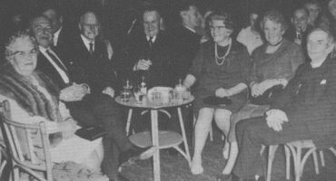
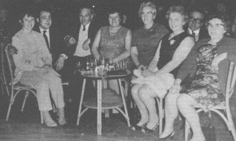

Le 18ieme Dîner Annuel dé l'Assembliée d'Jèrriais eut lieu Jêudi l'28 dé Janvyi à l'Hôtel des Arches et dans les 156 personnes lus assievîtes à mangi.
Le Président l'Sénateu P. J. Romeril fît la beinv'nue au Bailli d'Jèrri Messire R. H. Le Masurier at Mme Le Masurier, Mons. F. W. Guénier Directeur des Postes et Mme Guénier et ès Membres dé l'Assembllaie D'Guernsesiais, Mons. F. W. Torode, Mons et Mme F. Le B. Heaume, Mons et Mme H. Martel et Mons et Mme C. Robin.
D'vant lé r'pas l'Député A. C. Querée fît la priéthe.
Auprès l'Dîner l'Député W. Tomes Maître de Céremonies dit que j'avaimes l'Honneu d'aver l'Bailli Messire. R. H. Le Masurier à proposer la Santé d'l'Assembliee d'Jèrriais. En proposant chutte santé l'Bailli l'ermercyit pour le grand complyiment et dit qu'i 'tait bein èrconnaissant d'être v'nu et sa danme étout. Mme Le Masurier étant Angliaiche n'comprennait pas l'Jèrriais mais aimait hardi l'Ile et oulle 'tait bein orgieuse de sa nouvelle maison à la Trin'té
Là Président l'Sénateu P. J. Romeril en repônnant ermercyit l'Bailli pour aver honoré l'Assembliée en étant v'nu proposer sa Santé.
L'Député W. Tomes dit qué ch'tait etout un grand pliaîsi d'aver l'Directeur des Postes Mons. F. W. Guénier à proposer la Santé des Officièrs, car auprès 35 ans hors de l'Ile i' n'avait pas oublié l'Jèrriais.

La Dlle F. Hacquoil Vice-Presidente rêponnit chutte santé et dit que y'avait vingt ans que l'Assembliée avait 'té fondée pour conserver et preserver l'Jerriais, au jour d'anniet y'avait 400 membres et d'ches la six etaient en d'sous de 16 ans, ieunne en d'sous 20 et deux en d'sous 30, et trais d'ieux pâlaient l'Jèrriais couothamment.
L'Depute A. C. Queree proposit la Santé de l'Assembllaie D'Guernesiais et Mons F. Torode Vice President en rêponnant offrit les apologies de lus Président Mons. A. C. Le Tocq et sa danme lus absence et dit qu'il apportait les complyiments de Mons Sarre, sa fille et bein d'aut' Dguernesiais, il annoncit étout les triste nouvelles du décès de Mme Martin la danme du Secretaithe Assistant.
L'Député W. Tomes exprinmit la sympathie de l'Assembliee d'Jèrriais à Mons. Martin et annoncit que Mme F. Le B. Heaume avait apporté des copies d'un livre de Chansons et Danses de Dguernesey qui v'nait d'être publié et vallait bein la peine d'acater, i' n' y' avait qu'a s'applyitchi a la Sécrétaithe, l'Député ermercyit Mons. R. Martin et son personnel pour le magnifique èrpas qu'ils avaient servi.
Des boutchets d'Flieurs fûtent à Mme Le Masurier et Mme Romeril par les Dlles May Robert et Roselle Giot et un cadeau à la Dlle Ruth Amy par la Dlle Susan Le Texier.
Toute d'suite les gens fîtent lus c'min dans l'autre apartement pour la danse et à mié les divertiss'ments l'Sieur G. J. Perchard et sa danme amusites les membres auvec eune chanson "la pliaiche ou'est qu'le ch'va soulait être", la Dlle Ruth Amy chantit "Dans ma p'tite tithette de bas" et les Messieux J. N. Richard et B. J. Amy "Sus l'air du tra de ri de ra", l'Connêtablye G. A. Le Breton étant au Piano pour les trais items qui r'chutes des encores.
Auprès ch'la les membres lus rejouites en dansant à la musique de "Mo's Mood" jusqu'a un quart de ieune quand, tous fûtent demandés dé joindre ensemblye à chanter "Le Bouan Vier Temps" et "La Reine" pour amner à sa fin eune raide bouanne séthée qu'avait donné du pliaîsi à tous.
Touos l's arrang'ments étaient dans les mains de Conmité Social souos la Présidence du Député W. Tomes.
L'Bailli et sa Danme Mme Romeril, Mons F. Guenier et Mdlle Ruth Amy à admither les belle flieurs
Viyiz étout: